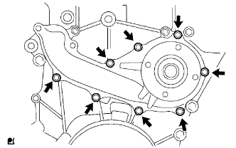
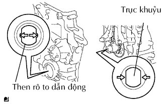
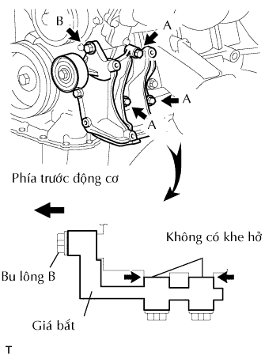
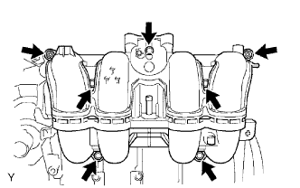
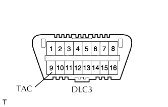
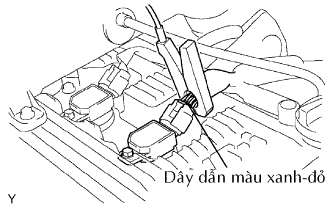

BƠM DẦU > LẮP |
| 1. LẮP CỤM BƠM NƯỚC |
|  |
Lắp một gioăng mới và bơm nước bằng 8 bulông.
| 2. LẮP NẮP XÍCH CAM (CỤM BƠM DẦU) |
Lắp 3 gioăng chữ O mới vào nắp xích cam như chỉ ra trên hình vẽ.
Bôi keo vào nút của nắp xích cam.
 |
Dùng khẩu lục giác 10 mm, lắp nút của nắp xích cam.
Bôi keo làm kín dạng sợi liên tục như chỉ ra trên hình vẽ.
| Vị trí | Điều kiện tiêu chuẩn |
| A - A, C - C | 2.5 đến 3.0 mm (0.098 đến 0.118 in.) |
| B - B, D - D | 4.0 đến 4.5 mm (0.157 đến 0.177 in.) |
| E | 3.0 đến 3.5 mm (0.118 đến 0.138 in.) |

|  |
Gióng thẳng then hoa rôto dẫn động bơm dầu và trục khuỷu như trên hình vẽ. Hãy lắp then hoa và tấm nắp xích cam vào trục khuỷu.
Lắp tạm nắp xích cam bằng 19 bulông và 2 đai ốc.
Gồm cả bulông A, hãy xiết chặt các bu lông và đai ốc theo thứ tự sau: Vùng 1, Vùng 2, Vùng 3.
Hãy xiết chặt các bu lông A theo thứ tự sau: Vùng 2 và Vùng 3.
Hãy xiết chặt các bu lông E cho Vùng 4.
| 3. LẮP CẢM BIẾN VỊ TRÍ TRỤC KHUỶU |
 |
Bôi một lớp mỏng dầu động cơ vào gioăng chữ O của cảm biến.
Lắp cảm biến bằng bulông.
Lắp giắc vào giắ bắt giắc.
Gắn kẹp dây điện.
Nối giắc của cảm biến.
| 4. LẮP CÁC TE DẦU SỐ 1 |
Bôi keo làm kín dạng sợi liên tục như chỉ ra trên hình vẽ.
Lắp tạm thời cácte dầu bằng 16 bulông và 2 đai ốc.
Xiết chặt đều tay 16 bulông và 2 theo thứ tự được chỉ ra như trong hình vẽ.
| 5. LẮP LƯỚI LỌC ĐẦU |
Lắp một gioăng mới và lưới lọc dầu bằng bulông và 2 đai ốc.
| 6. LẮP CÁCTE DẦU SỐ 2 |
Bôi keo làm kín dạng sợi liên tục như chỉ ra trên hình vẽ.
Lắp tạm thời cácte dầu bằng 20 bulông và 2 đai ốc.
Xiết chặt đều tay 20 bulông và 2 đai ốc theo thứ tự được chỉ ra như trong hình vẽ.
Lắp một gioăng mới và nút xả.
| 7. LẮP PULI TRỤC KHUỶU |
Gióng thẳng then puli với rãnh then trên puli và lắp puli vào.
Dùng SST, lắp bulông puli trục khuỷu mới.
| 8. LẮP CẢM BIẾN VỊ TRÍ TRỤC CAM |
Bôi một lớp dầu động cơ vào gioăng chữ O mới.
Lắp cảm biến bằng bulông.
| 9. LẮP NẮP ĐẬY NẮP QUY LÁT |
Lắp 2 gioăng vào nắp đậy nắp quy lát.
Bôi keo làm kín lên các vị trí như trên hình vẽ.
Lắp tạm thời nắp đậy nắp quy lát bằng 19 bulông và 2 đai ốc.
Xiết chặt đều tay 19 bulông và 2 đai ốc theo thứ tự được chỉ ra như trong hình vẽ.
Thứ tự đánh số, kiểm tra lại rằng các bu lông có đánh dấu 1 đến 8 đã được xiết đạt mômen xiết tiêu chuẩn. Hãy xiết chặt các bu lông nếu cần thiết.
| 10. LẮP NẮP ĐỔ DẦU |
| 11. LẮP ỐNG NƯỚC ĐI TẮT SỐ 1 |
Lắp một gioăng mới và ống nước đi tắt bằng 2 đai ốc.
| 12. LẮP PULI CĂNG ĐAI SỐ 1 |
Lắp vòng đệm, puli căng đai và tấm bắt puli bằng bu lông.
| 13. LẮP BỘ CĂNG ĐAI V |
Lắp tạm thời bộ căng đai bằng 3 bulông.
Lắp bộ căng đai bằng cách xiết chặt 3 bulông theo thứ tự như trên hình vẽ.
| 14. LẮP VAN HẰNG NHIỆT |
 |
Lắp một gioăng mới vào van hằng nhiệt.
Lắp van hằng nhiệt vào thân máy với van khí hướng thẳng lên trên.
| 15. LẮP ĐƯỜNG NƯỚC VÀO |
Lắp đường vào bằng 2 đai ốc và bu lông.
Lắp giắc nối.
| 16. LẮP GIÁ BẮT MÁY NÉN (w/ Hệ thống điều hoà không khí) |
|  |
Lắp tạm thời giá bắt máy nén bằng 3 bulông được đánh dấu A.
Chắc chắn không có khe hở giữa thân máy và giá bắt như được chỉ ra trên hình vẽ. Sau đó lắp bu lông B.
 |
Xiết chặt hoàn toàn các bulông có dấu A và lắp bu lông có dấu C.
| 17. LẮP CỤM MÁY PHÁT |
 |
Lắp máy máy phát bằng 2 bu lông.
Lắp dây điện máy phát bằng bulông và đai ốc.
Lắp nắp cực.
Lắp giắc nối.
| 18. LẮP ĐƯỜNG ỐNG NẠP |
|  |
Lắp một gioăng mới và đường ống nạp bằng 5 bulông và 2 đai ốc.
Lắp cảm biến vị trí trục khuỷu vào kẹp.
| 19. LẮP CỤM CỔ HỌNG GIÓ |
 |
Lắp gioăng mới lên đường ống nạp.
 |
Lắp cụm cổ họng gió bằng 2 bulông và 2 đai ốc.
Nối 2 ống nước đi tắt vào cổ họng gió.
Ngắt giắc nối cảm biến vị trí bướm ga và giắc nối môtơ điều khiển.
| 20. LẮP BUGI |
| 21. LẮP CUỘN DÂY ĐÁNH LỬA |
Lắp cuộn đánh lửa bằng bu lông.
| 22. THÁO ĐỘNG CƠ RA KHỎI GIÁ BẮT ĐỘNG CƠ |
| 23. LẮP CỤM ĐỘNG CƠ |
Lắp động cơ vào xe. (Xem trang Kích chuột vào đây).
| 24. NỐI CÁP VÀO CỰC ÂM ẮC QUY |
| 25. TIẾN HÀNH THIẾT LẬP BAN ĐẦU |
TIẾN HÀNH THIẾT LẬP BAN ĐẦU (Xem trang Kích chuột vào đây).
| 26. ĐỔ DẦU ĐỘNG CƠ VÀO |
Lau sạch và lắp nút xả dầu cùng với một gioăng mới.
Đổ dầu động cơ mới vào.
| Hạng mục | Điều kiện tiêu chuẩn |
| Xả ra và đổ dầu vào trường hợp có thay lọc dầu | 5.6 lít (5.9 US qts, 4.9 Imp. qts) |
| Xả ra và đổ vào trường hợp không thay lọc dầu | 5.3 lít (5.6 US qts, 4.6 Imp. qts) |
| Đổ khô | 6.3 lít (6.7 US qts, 5.5 Imp. qts) |
Lắp nắp lỗ đổ dầu.
| 27. ĐỔ NƯỚC LÀM MÁT VÀO |
Xiết chặt tất cả các nút và đổ SLLC của Toyota vào.
Hãy đổ SLLC của Toyota vào bình chứa đến vạch F.
Hãy bóp các ống (mềm) nước ra và vào một vài lần bằng tay, sau đó kiểm ra rò rỉ nước làm mát.
Nếu mức nước làm mát giảm xuống dưới vạch F, hãy đổ thêm SLLC của Toyota đến vach F.
Lắp nắp két nước.
Hãy xả khí ra khỏi hệ thống làm mát.
Hâm nóng động cơ cho đến khi van hằng nhiệt mở.
Trong khi van hằng nhiệt đang mở, tuần hoàn nước làm mát trong một vài phút.
Duy trì tốc độ động cơ tại tốc độ 2,500 đến 3,000 vòng/phút.
Hãy bóp các ống (mềm) nước ra và vào một vài lần bằng tay để xả khí.
Tắt máy và đợi đến khi nước làm mát nguội đến nhiệt độ môi trường.
 |
Kiểm tra mức nước làm mát trong bình chứa nước làm mát.
Nếu mức nước làm mát sụt xuống dưới vạch F, hãy đổ thêm SLLC của Toyota vào bình chứa đến vạch F.
| 28. KIỂM TRA RÒ RỈ NHIÊN LIỆU |
Nối máy chẩn đoán với giắc DLC3.
Bật khoá điện ON.
Bật công tắc chính của máy chẩn đoán ON.
Hãy chọn thử kích hoạt và truy nhập và menu sau: Powertrain / Engine and ECT / Active Test / Control the Fuel Pump / Speed.
Kiểm tra rò rỉ nhiên liệu.
Kiểm tra rằng không có rò rỉ nhiên liệu trong hệ thống nhiên liệu sau khi tiến hành bảo dưỡng.
| 29. KIỂM TRA RÒ RỈ DẦU |
Khởi động động cơ và kiểm tra rằng không có rò rỉ dầu sau khi tiến hành bảo dưỡng.
| 30. KIỂM TRA RÒ RỈ NƯỚC LÀM MÁT |
Kiểm tra rò rỉ nước làm mát động cơ (Xem trang Kích chuột vào đây).
| 31. KIỂM TRA CHỨC NĂNG CỦA CỔ HỌNG GIÓ |
 |
Kiểm tra tiếng kêu hoạt động của môtơ điều khiển bướm ga.
Bật khoá điện ON.
•Khi đạp bàn đạp ga, hãy nghe âm thanh hoạt động của môtơ đang chạy. Chắc chắn rằng không có tiếng kêu do ma sát phát ra từ môtơ.
Nếu nghe thấy tiếng kêu do cọ xát, hãy thanh thế cổ họng gió.
 |
Kiểm tra cảm biến vị trí bướm ga.
Nối máy chẩn đoán với giắc DLC3.
Bật khoá điện ON.
Dưới dữ liệu hiện thời, hãy kiểm tra rằng số phần trăm góc mở bướm ga (Throttle Pos) là nằm trong tiêu chuẩn.
| 32. KIỂM TRA THỜI ĐIỂM ĐÁNH LỬA |
Hâm nóng động cơ rồi tắt máy.
 |
Khi dùng máy chẩn đoán.
Kiểm tra thời điểm đánh lửa.
Nối máy chẩn đoán với giắc DLC3.
Khởi động động cơ và để nó chạy không tải.
Bật công tắc chính của máy chẩn đoán ON.
Truy cập vào các mục sau đây: Powertrain / Engine and ECT / Data List / IGN Advance.
|  |
Khi không dùng máy chẩn đoán.
Kiểm tra thời điểm đánh lửa.
Dùng SST, nối cầu đo của máy đo tốc độ động cơ với cực 9 (TAC) của giắc DLC3.
|  |
Kẹp đầu đo của đèn soi thời điểm đánh lửa vào 4 dây dẫn hoặc dây dẫn màu xanh đỏ của giắc nối cuộn đánh lửa xi lanh No.1.
Khởi động động cơ.
 |
Dùng SST, nối tắt các cực 13 (TC) và 4(CG) của giắc DLC3.

 |
Dùng đèn soi thời điểm đánh lửa, đo thời điểm đánh lửa.
Ngắt SST ra khỏi các cực 13 (TC) và 4(CG) của giắc DLC3.
Kiểm tra thời điểm đánh lửa.
Chắc chắn rằng thời điểm đánh lửa dịch sang phía sớm khi tăng tốc độ động cơ.
Tháo đèn soi lửa.
| 33. KIỂM TRA TỐC ĐỘ KHÔNG TẢI |
Hâm nóng động cơ rồi tắt máy.
Khi dùng máy chẩn đoán.
Kiểm tra tốc độ không tải.
|
Nối máy chẩn đoán với giắc DLC3.
Khởi động động cơ và để nó chạy không tải.
Bật công tắc chính của máy chẩn đoán ON.
Truy cập vào các mục sau đây: Powertrain / Engine and ECT / Data list / Engine SPD.
Khi không dùng máy chẩn đoán.
Kiểm tra tốc độ không tải.
Dùng SST, nối đầu đo của đồng hồ đo tốc độ động cơ với cực 9 (TAC) của giắc DLC3.
Khởi động động cơ và để nó chạy không tải.
Kiểm tra tốc độ không tải.
| 34. KIỂM TRA CO/HC |
Khởi động và hâm nóng động cơ.
Chạy động cơ tại tốc độ 2500 vòng/phút trong khoảng 180 giây và động cơ chạy không tải.
 |
Cắm đầu đo của máy đo CO/HC vào sâu ít nhất là 40 cm (1.3 ft.) vào đuôi ống xa.
Kiểm tra nồng độ CO/HC tại tốc độ không tải.
Nếu nồng độ CO/HC không như tiêu chuẩn, hãy khắc phục hư hỏng theo thứ tự được trình bày ở bảng dưới đây.
Kiểm tra hoạt động của cảm biến ôxy có sấy (Xem trang Kích chuột vào đây).
Hãy xem bảng dưới đây để tìm nguyên nhân khác, sau đó kiểm tra nguyên nhân và sửa chữa nếu cần.
| CO | HC | Hư hỏng | Các nguyên nhân |
| Bình thường | Cao | Chạy không tải không êm |
|
| Thấp | Cao | Chạy không tải không êm (Chỉ số HC dao động) |
|
| Cao | Cao | Chạy không tải không êm (Khói đen ra khỏi ống xả) |
|